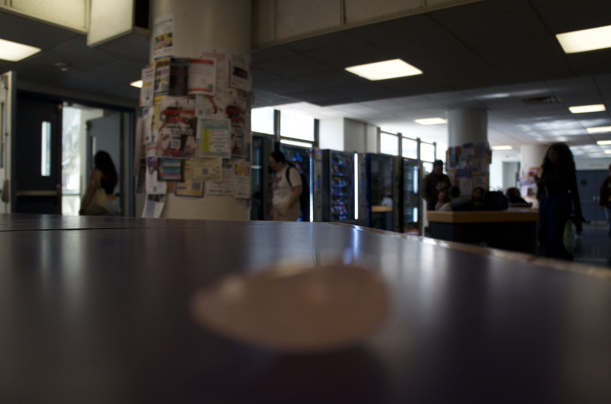
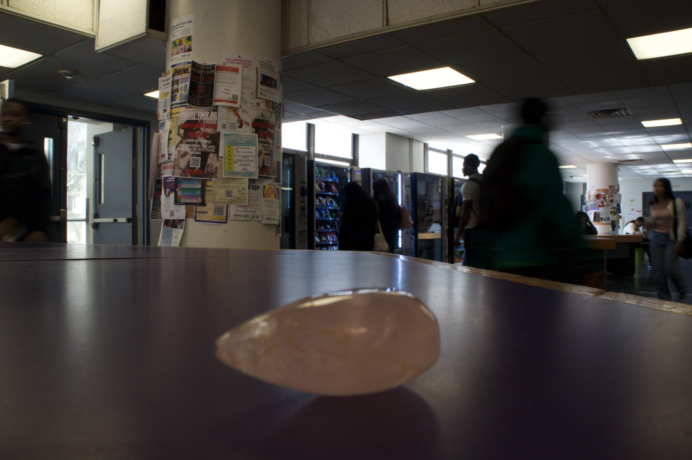

For this assignment I took two photographs, one with a deep depth of field and one with shallow depth. In photoshop I used the field blur tool in order to create depth of field despite the effects that the apreture had on the exposure of the image I took where everything was in focus.

 HOME
HOME